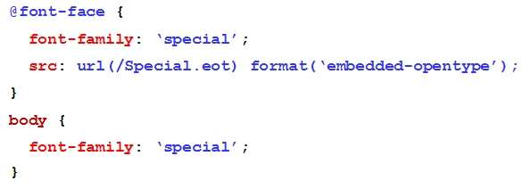
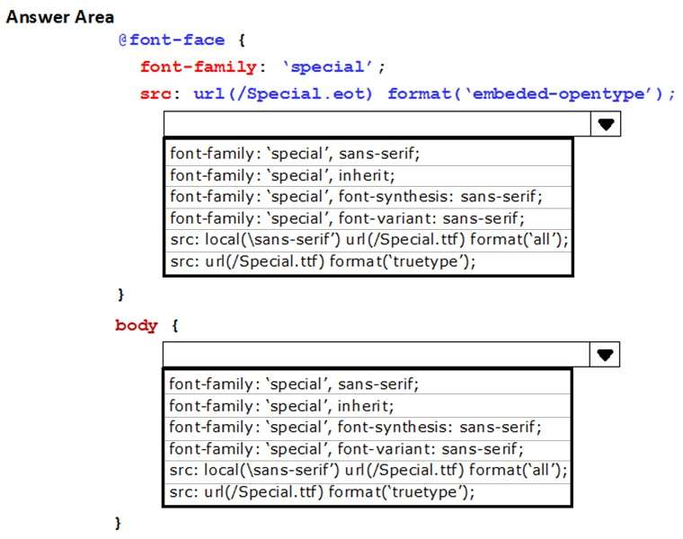
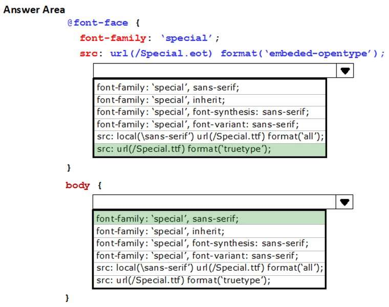

QUESTION 187
HOTSPOT
You are implementing an HTML page that uses a custom sans-serif font. The CSS statement for the page is as follows.

Some users report that text is displayed in the default font for the browser.
You need to modify the CSS statement to ensure that the content is displayed with the custom font.
What should you do? To answer, select the appropriate options from the drop-down lists in the answer area.
Hot Area: Correct Answer:


Estas letras se mostrarán en la fuente "special"
Note: Internet Explorer 8 and earlier, do not support the @font-face rule.
Section: Volume D
Explanation
Explanation/Reference:
Explanation:
Using The Font You Want
In the CSS3 @font-face rule you must first define a name for the font (e.g. myFirstFont), and then point to
the font file.
To use the font for an HTML element, refer to the name of the font (myFirstFont) through the font-family
property:
Example
@font-face {
font-family: myFirstFont;
src: url(sansation_light.woff);
}
div {
font-family: myFirstFont;
}
Note:
* CSS3 Web Fonts - The @font-face Rule
Web fonts allow Web designers to use fonts that are not installed on the user's computer.
When you have found/bought the font you wish to use, just include the font file on your web server, and it
will be automatically downloaded to the user when needed.
Your "own" fonts are defined within the CSS3 @font-face rule.
* TrueType Fonts (TTF)
TrueType is a font standard developed in the late 1980s, by Apple and Microsoft. TrueType is the most
common font format for both the Mac OS and Microsoft Windows operating systems.
Reference: https://www.w3schools.com/css/css3_fonts.as
La regla @font-face se asocia típicametne a CSS3 pero muy pocos se acuerdan de que estaba disponible en CSS2, aunque sus limitaciones,
principalmente en los formatos aceptados, hacían que apenas se usase. La principal actualización de esta regla en CSS3 fue precisamente la
de aceptar más formatos, como .eot, .ttf, .otf y .svg, lo que hizo posible un soporte más universal entre navegadores.
Sintaxis
Propiedades obligatorias
font-family
Es el nombre de la fuente y es el mismo que luego se definirá como valor en para la regla font-family en el elemento que deseemos utilizarla.
Debería ir entre dobles comillas o comilla simple aunque si el nombre no contiene espacios puede escribirse sin comillas.
src
Se ha de definir al menos una URL dónde está ubicado el archivo de la fuente para poder importarla. Se pueden especificar varias rutas,
cada una en una declaración url() y separada por una coma de la siguiente. Esto es útil para definir la ubicación de la misma fuente en diversos
formatos y así maximizar la compatibilidad entre navegadores.
Recuerda que las declaraciones url() admiten URLs parciales o absolutas y que las parciales se interpretan de forma relativa al stylesheet, no al documento HTML.
También admite la declaración local('nombre fuente') para decirle al navegador que intente buscar entre las fuentes locales antes de descargar el archivo y ahorrar así tiempo y ancho de banda.